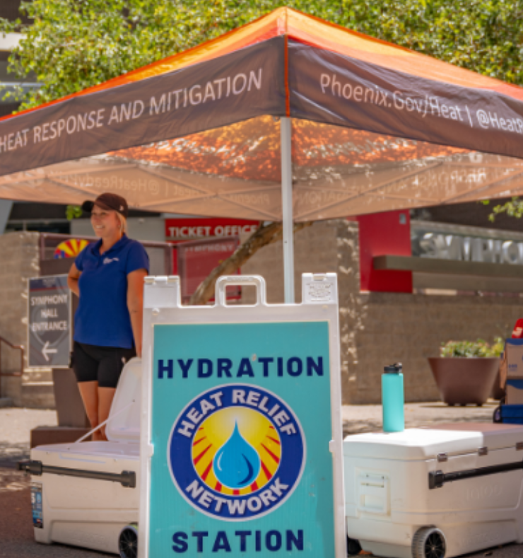
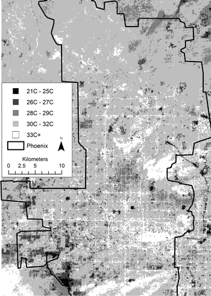
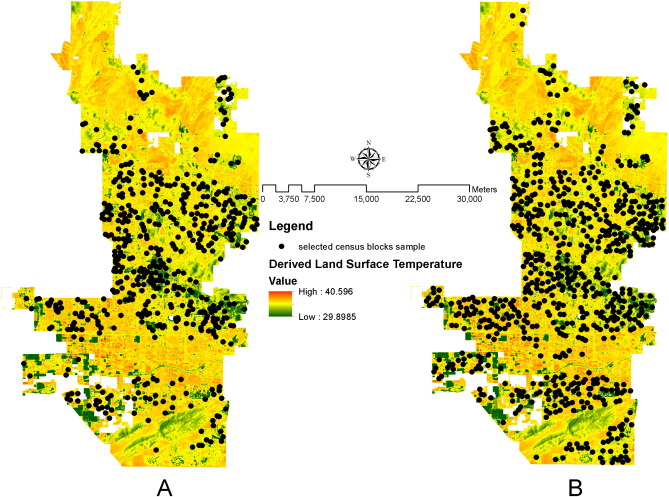
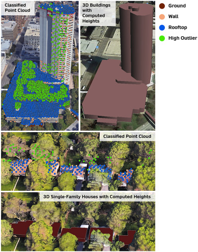

5 Remote Sensing for Urban Policy
5.1 Summary
Phoenix, Arizona faces significant challenges from extreme heat, with the city experiencing an average of 110 days annually above 100°F (37.8°C). In response, Phoenix established the nation’s first municipal Heat Response and Mitigation Office (HRMO) in 2021, demonstrating pioneering leadership in urban climate adaptation. The city recently released its 2025 Heat Response Plan which outlines a comprehensive framework for reducing heat-related fatalities, decreasing urban temperatures, and building community resilience through targeted interventions in the built environment (City of Phoenix, 2025). This policy directly aligns with SDG 13 (Climate Action), focusing specifically on target 13.1 to “strengthen resilience and adaptive capacity to climate-related hazards and natural disasters.”
In January 2020, Phoenix became a member of the C40 Cities network, joining 94 global cities committed to leadership in addressing climate change and improving environmental and economic well-being for residents. As part of this commitment, Phoenix developed its 2021 Climate Action Plan (CAP) which establishes a roadmap for reducing greenhouse gas emissions and building climate resilience. The city’s membership in C40 has facilitated knowledge exchange with other heat-stressed cities and accelerated adoption of evidence-based cooling strategies (C40 Cities, 2023). Beyond the cool pavement program and tree canopy expansion, Phoenix is implementing several innovative heat mitigation initiatives including: (1) HeatReady certification program that helps neighborhoods prepare for extreme heat events, (2) Cool Corridor program creating shaded pathways to transit stops, and (3) Building Energy Benchmarking ordinance requiring large buildings to track and report energy performance, indirectly addressing urban heat through reduced energy consumption and emissions (City of Phoenix, 2021).
{fig-align=“center”,width=“50%”}
5.2 Applications
Remote sensing technologies offer practical solutions for implementing Phoenix’s heat mitigation strategies through detailed thermal mapping and analysis. For identifying priority intervention areas, Phoenix could apply Connors et al.’s (2013) object-based image analysis methodology that segments QuickBird satellite imagery (0.6m resolution) into distinct urban objects and analyzes their spatial relationships to surface temperature. This approach reveals how specific neighborhood configurations amplify heat, allowing Phoenix to target interventions where modest changes to urban configuration would yield maximum cooling benefits rather than simply addressing the hottest areas.

For optimizing the cool pavement program, Phoenix could apply Li et al.’s (2016) spatial regression methodology that quantifies relationships between land surface temperature and urban form. By combining Landsat thermal data with cadastral and socioeconomic information, this approach helps identify how urban configuration influences surface temperature across neighborhoods. Their research found that a 10% increase in impervious surface connectivity can increase land surface temperature by up to 0.9°C, providing Phoenix with specific targets for strategic pavement modification to disrupt heat-amplifying surface networks.

For the Cool Corridor program, Phoenix could implement Park et al.’s (2021) approach combining 3D city modeling with thermal remote sensing. Using high-resolution digital surface models from LiDAR, building footprint data, tree canopy information, and thermal imagery, this methodology calculates shadow patterns throughout the day to quantify cooling effects of shade structures. Their findings that tree-shaded surfaces were 4.8°C cooler than unshaded areas provide Phoenix with evidence-based guidelines for optimal placement of shade structures along pedestrian routes to transit stops.

5.3 Reflection
Working through Phoenix’s heat mitigation strategies has transformed my understanding of how remote sensing bridges the gap between climate policy aspirations and implementation. Before this analysis, I viewed urban heat as a uniform phenomenon addressable through standardized interventions. Now I appreciate the intricate spatial dynamics of urban heat—how the arrangement of buildings, vegetation, and pavement creates unique thermal signatures requiring tailored solutions.
I was also struck by the powerful intersection of remote sensing and environmental justice. The correlation between income levels and vegetation cover highlights how technological tools can make visible the often-hidden patterns of environmental inequality, ensuring climate adaptation efforts don’t inadvertently reinforce existing disparities.
Looking forward, I’m particularly interested in how Phoenix’s C40 membership might facilitate knowledge transfer of these methodologies to other heat-stressed cities globally. The Phoenix case has convinced me that effective climate adaptation requires not just technological solutions but also institutional frameworks that can translate satellite-derived insights into equitable, community-specific interventions.
5.4 References
C40 Cities. (2023). Phoenix. Retrieved from https://www.c40.org/cities/phoenix/
City of Phoenix. (2021). Climate Action Plan. Office of Environmental Programs. Retrieved from https://www.phoenix.gov/administration/departments/oep/climate-change.html
City of Phoenix. (2025). 2025 Heat Response Plan Presented at City Council Policy Session. Retrieved from https://www.phoenix.gov/newsroom/heat-news/2025-heat-response-plan-presented-at-city-council-policy-session.html
Connors, J. P., Galletti, C. S., & Chow, W. T. (2013). Landscape configuration and urban heat island effects: Assessing the relationship between landscape characteristics and land surface temperature in Phoenix, Arizona. Landscape Ecology, 28(2), 271-283. https://doi.org/10.1007/s10980-012-9833-1
Li, X., Li, W., Middel, A., Harlan, S. L., Brazel, A. J., & Turner, B. L. (2016). Remote sensing of the surface urban heat island and land architecture in Phoenix, Arizona: Combined effects of land composition and configuration and cadastral–demographic–economic factors. Remote Sensing of Environment, 174, 233-243. https://doi.org/10.1016/j.rse.2015.12.022
Park, Y., Guldmann, J. M., & Liu, D. (2021). Impacts of tree and building shades on the urban heat island: Combining remote sensing, 3D digital city and spatial regression approaches. Computers, Environment and Urban Systems, 88, 101655. https://doi.org/10.1016/j.compenvurbsys.2021.101655